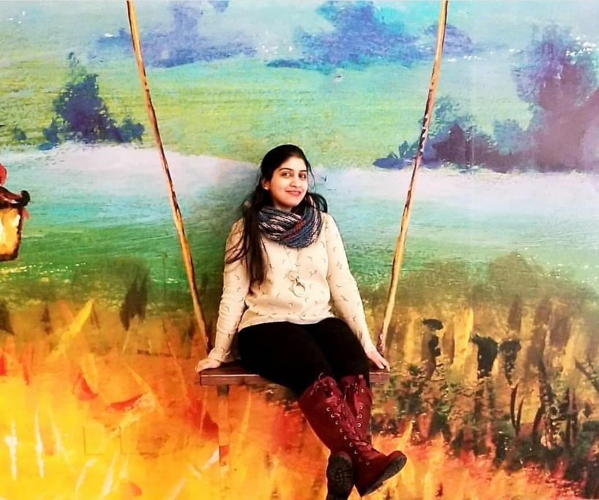

About Me

Hello Everyone... Welcome to my Page... !!! I'm Zeba and I am based from India, I'm a fashion designer who is a great food lover (kind of good cook as well) and always passionate to learn and upgrade myself with new knowledge. Currently I'm working in Amazon as a "Associate", I have been with Amazon since more than a year now and I love my work.
I came in contact to programming a few years ago when I worked under a Programmer as an "Content Curator and social media manager" for their website named "WedNeeds". I was very curious to know what he is doing on that black screen (Terminal), because I was already learning Fashion Designing and also I was told "Programming is needs years of computer science study" I skipped it and move on with my passion of clothing.
Now, In US when I saw that "Rutgers Bootcamps" are offering a "Full Stack Development" course which doesn't require years of computer science study my becoming a programmer hope came to light. I am all set for new education and challenges to make myself ready to step into the world of Tech as "Full Stack Developer".